GRU forces steal the prototype Shagohod weapon in Tselinoyarsk, 1964.
virtuous mission
The Virtuous Mission was an infamous CIA operation in August of 1964 that
involved a deep insertion inside the Soviet Union. A FOX agent codenamed
Naked Snake was deployed via the world's first HALO jump in order to
rescue a Soviet defector, the weapons scientist Nikolai Stepanovich
Sokolov. While Snake succeeded in locating and extracting Sokolov from his
KGB guards, he was subsequently attacked and critically injured by a
defecting American agent. Sokolov was then re-captured, and the GRU
officer Volgin not only seized Sokolov's project, but also unleashed an
American-made Davy Crockett nuclear weapon on Russian citizens, creating
an international incident. The catastrophe of the Virtuous Mission was so
extreme that the CIA considered executing both Snake and his commanding
officer, Major Zero. They were saved only by the need for Snake to be
re-inserted a week later in Operation Snake Eater.
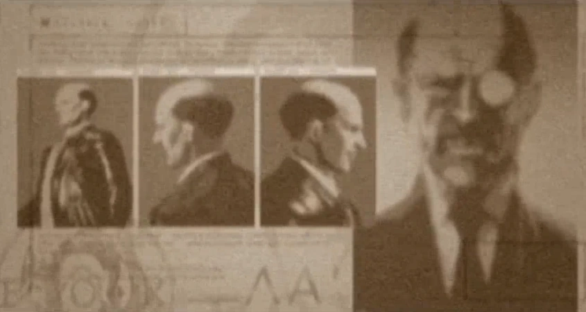
Nikolai Stepanovich Sokolov's mission file
prelude
In 1962, a Soviet scientist by the name of Nikolai Stepanovich Sokolov
wished to defect to America. Sokolov was one of the Soviet Union's
foremost weapons developers and head of the OKB-754 Design Bureau. Sokolov
also requested that his family also defect to America. The man in charge
of the operation was David Oh, a British-originating CIA member. The CIA
successfully managed to sneak Sokolov's family over the Berlin Wall, and
then Sokolov himself, although Sokolov himself ended up exhausted from
traveling over 800 km (500 mi) during the two-week journey and was checked
into a hospital to recover.
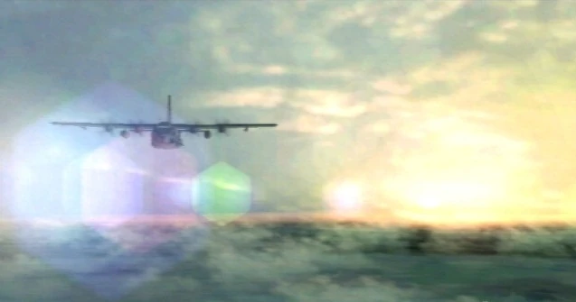
Sunrise over Tselinoyarsk.
However, on October 16, 1962, President John F. Kennedy received word that
the Soviets were in the process of deploying intermediate-range ballistic
missiles in Cuba. The President demanded that the Soviets dismantle and
remove the missiles immediately. At the same time, he announced a naval
blockade to prevent further missile shipments from reaching Cuba. But the
Soviets didn't back down, instead placing their armed forces on secondary
alert. Soviet transport ships carrying missiles continued on course toward
Cuba. U.S. and Soviet forces went on alert for an all-out nuclear war.
Frantic negotiations were conducted through the U.N.'s Emergency Security
Council and unofficial channels to end the hair-trigger standoff. Finally,
on October 28, the Soviet Union agreed to remove its missiles from Cuba.
And so the world avoided a nuclear holocaust. This incident became known
as the Cuban Missile Crisis.
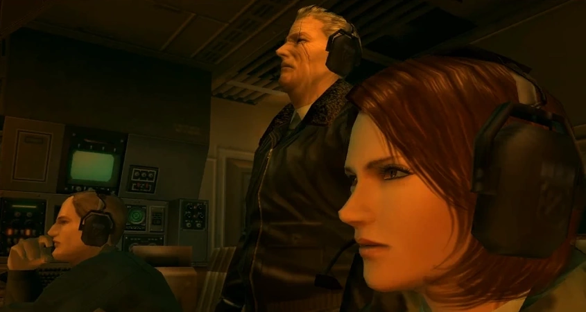
The Virtuous Mission's supporting team.
But in order to get the Soviets to pull their missiles out, the U.S.
had to make a deal. Most official records will say that the U.S. agreed
to remove its IRBMs from Turkey and the Soviets would remove theirs from Cuba.
However, the IRBMs deployed in Turkey were obsolete and the CIA was already
planning on getting rid of them, serving absolutely no strategic values for
both sides. The Turkey deal was a ruse - a cover story that was fed to the
other intelligence agencies around the world. What the Soviets really wanted
was the return of Sokolov.
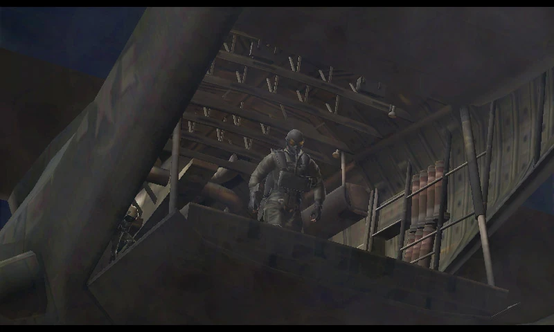
Naked Snake preparing to jump.
Sokolov was returned to the Soviets and promptly taken back to his Design Bureau
and forced to finish the weapon he had been working on, including an increased amount
of tests at Semipalatinsk in February, 1964. However, a mole
(who was in contact with The Boss via her own "intelligence channels") within the Soviet Union
reported some details about the weapon, including the fact that it was nearing completion.
The CIA, convinced that this new weapon would dramatically shift the balance of power,
ordered Naked Snake, an operative of the newly formed FOX Unit to be dropped into Tselinoyarsk
to recover Sokolov within three to four hours. Unknown to others involved in the operation,
the Major had members of FOX's covert support unit, XOF, deployed into the field before Snake
into order to provide him tactical support and field intel which was all relayed through
Zero in order to keep the Units existence a secret. They were the ones who discovered Sokolov's
exact location but were ordered not to interfere with Snake's mission and were to told to covertly
observe it from afar.
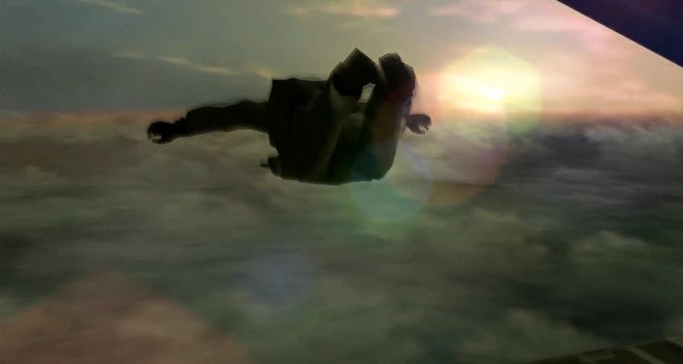
The world's first HALO jump.
However, there were initial problems during the flight over to Tselinoyarsk when Naked Snake attempted to savor the
Havana cigar he was currently smoking instead of putting on his pressurized mask while the depressurization was in
session, only managing to put it on at the last second when Major Zero told him off. At an altitude of thirty
thousand
feet, just over the Pakistani border, Snake launched himself from a special ops MC-130E Combat Talon aircraft, and
performed the world’s first HALO (High Altitude-Low Opening) jump. Snake successfully infiltrated Tselinoyarsk after
skydiving at 200 km/h (130 mph) at a temperature of minus 46 degrees Celsius, avoiding frostbite on the way down and
activating the parachute.
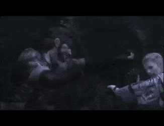
cqc demonstration
Close Quarters Combat
Snake had support from his commanding officer Major Zero (changing his codename to Major Tom for this mission) and
FOX's medic Para-Medic via radio. However, there was one other person on Snake's support team: The Boss, Snake's old
mentor who abandoned him five years before hand without any explanation. Glad to hear her voice again, Snake
continued his mission. Unknown to everyone else except Zero, a small Intel team from FOX's covert support unit XOF,
was deployed into the field to provide Intel for both Snake and the Boss which was relayed through Zero.
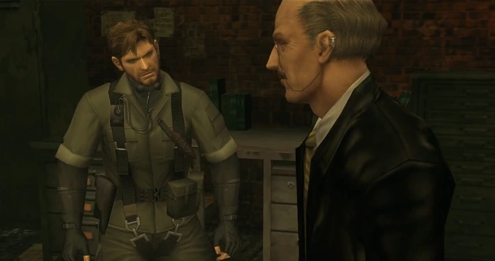
Snake finds Sokolov.
Snake familiarized himself with the area, and later found the rope bridge that would bring him to Rassvet to meet
Sokolov. However, a guard was standing near the bridge, making it difficult to go through undetected. Snake noticed
through his binoculars that a hornets' nest lay directly above the soldier and decided to shoot it down as a
distraction. After crossing the bridge, Snake sneaked his way around the KGB guards, through the rubble exterior and
into a cabin towards the back of the perimeter. Inside, he confronted Sokolov (who was in the middle of burning
documents relating to the new weapon), letting him know that he was there to rescue him. Sokolov warned Snake that
an anti-Khrushchev faction planned to overthrow the Soviet Premier, and that one of their members, a GRU colonel
named Yevgeny Borisovitch Volgin, was preparing to retrieve Sokolov himself, along with his weapon. Volgin was
looking to remove Khrushchev from power and install Leonid Brezhnev and Aleksei Kosygin in his place, using
Sokolov's weapon as leverage.
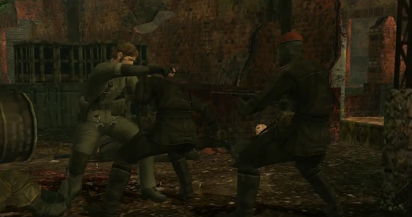
Snake fights against the Ocelot Unit.
As Snake and Sokolov began to make their way to the extraction point, they were ambushed by KGB operatives and
held at gunpoint. The KGB agents were then killed by GRU Major Ocelot, as he mistook Naked Snake for The Boss. Upon
realizing his mistake, Ocelot summoned his Ocelot Unit to surround them. Ocelot attempted to kill Snake himself,
using a technique that involved ejecting the first bullet by hand, but the gun jammed at the last moment. Snake,
seizing the opportunity, used his hand-to-hand CQC techniques, and managed to disable all the Ocelot Unit members
while Sokolov escaped the area.
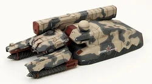
the Shagohod
Shagohod
When they reached the rope bridge Sokolov pointed to the top of a nearby mountain, where Sokolov’s Shagohod, a huge
tank capable of firing a nuclear missile across large distances, was being tested. He explained that, should it be
completed, it would mean the end of the Cold War, and the start of a new World War, and that the Soviet government
forced him to work on the project under the threat of death, and that the project would be discontinued when he
defected.
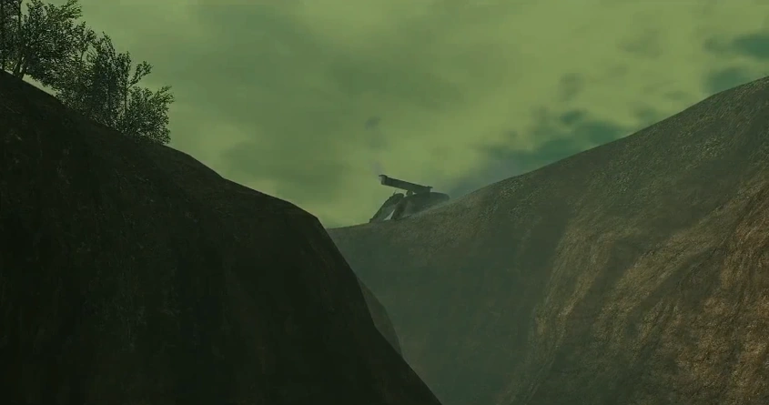
first time seeing the shagohod
On their way over the bridge they were greeted by The Boss, only to find out that she had defected to the Soviet
Union. Sokolov was captured by the Cobra Unit, and The Boss explained that Sokolov, along with a couple of Davy
Crocketts (miniature nuclear shells) were her gift to her new hosts. Colonel Volgin himself joined The Boss and
Snake on the bridge. Volgin commanded The Boss to kill Snake after the latter refused to have him join, which she
attempted to do by breaking his left elbow in a vertical arm chop, and throwing him off the bridge (yet secretly
knowing full well that he would survive the fall). Snake managed to retrieve the bandana shortly beforehand.
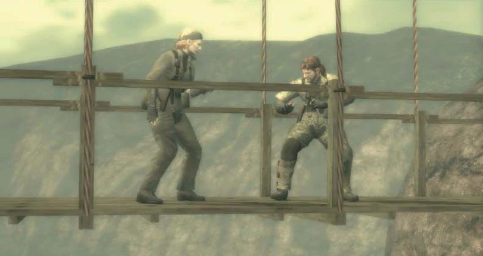
Master vs. disciple.
Snake did indeed survive, and tended to his wounds (which included a broken left rib bone, as well as lacerations to
the upper arms, right elbow, and the abdomen, as well as the broken left elbow that was from The Boss) with guidance
from Para-Medic two hours later.[1] He briefly saw The Boss in a squadron of five prototype Hind-A gunships,
transporting the Shagohod away from Sokolov's research facility. Volgin's troops had also captured a female KGB
officer named Tatyana. Volgin, after he and Ocelot speculated that she may be Sokolov's lover, decided that she was
"a fine catch," and discovered that she had a Kiss of death in her possession. Volgin, deciding that the Sokolov
Design Bureau no longer served of any use to him, decided to test one of the Davy Crockett launchers on the OKB-754
research facility. Ocelot, upon learning this development, attempted to stop him, horrified that Volgin would
actually try to nuke their fellow countrymen, even if they were on the opposing side. Volgin then stated that the
intelligence would nonetheless think that it was The Boss who pulled the trigger instead of himself, before saying
"Remember the Alamo," and then firing the weapon. OKB-754 was completely wiped out in the explosion, which Snake
witnessed as he prepared for extraction via the Fulton Recovery System.
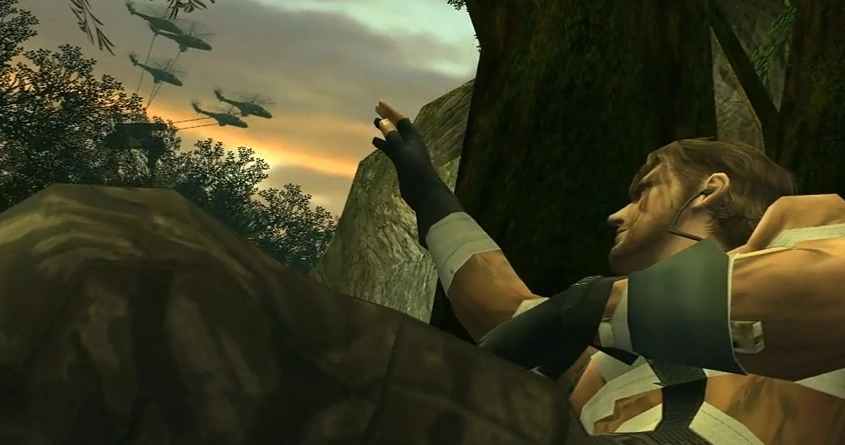
The helicopters go away.
Debriefing
The launching of the warhead led Khrushchev to believe it was the U.S. who fired the nuke, since the MC-130E was
picked up on radar within Soviet air space. As a result of the international controversy that ensued, Naked Snake
was also detained by the military for any possible involvement in The Boss' defection while he was recovering in the
ICU, heavily questioned, and awaiting possible execution, and various key members of the CIA were also under house
arrest due to fear that the non-savory members would follow her example and defect. Ultimately, due to a call
shortly afterwards between Nikita Khrushchev and Lyndon B. Johnson requesting the latter prove America's lack of
involvement in the disaster (mostly to dissuade the Red Army's demands for a retaliatory strike due to his power
growing more feeble than anything else), Snake and FOX were dispatched to Tselinoyarsk again for Operation Snake
Eater. Volgin's action with the Davy Crockett also resulted in at the very least Rassvet being affected by nuclear
fallout, preventing any Soviet personnel from being present in the area, which made it ideal for a planned meeting
place for Snake and ADAM regarding Operation Snake Eater.